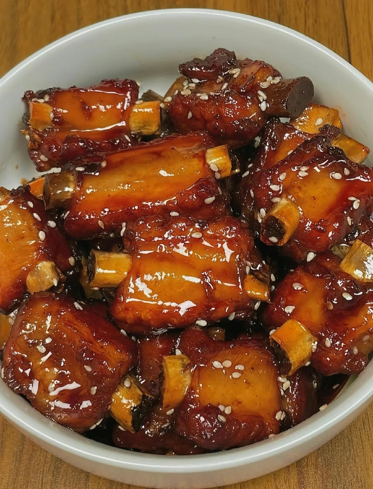

首页
糖醋排骨

描述
糖醋排骨是一道酸甜可口的传统名菜
配料
- 猪小排 500g
- 白糖 4汤勺(一汤勺15毫升)
- 醋 3汤勺(一汤勺15毫升)
- 酱油 2汤勺(一汤勺15毫升)
- 料酒 1汤勺(一汤勺15毫升)
- 水
- 盐 3g
- 姜片
步骤
- 猪小排洗净，晾干水份备用
- 锅内倒少量油，烧热之后，爆香姜片
- 放入排骨，一直煸炒到排骨变色后，表面金黄微焦
- 此时就可以放入黄金比例中的调料了，顺序是：先放一汤勺料酒，接着两汤勺酱油，三汤勺醋最后四汤勺白糖，炒匀
- 再倒入能没过排骨的开水，调中小火焖20分钟
- 20分钟后调入盐。开大火收汁，收到汁浓色亮时，撒入芝麻点缀即可出锅(锅里剩下的姜片丢掉不用，最后大火收汁时注意多翻动锅内的排骨，避免烧焦呦！)